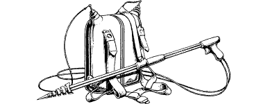

21
Cautiously you approach the slain warriors. You are eager to examine their strange armour, and you are particularly curious about the light-emitting spears they wielded; weapons such as these could prove useful in your fight against Wolf’s Bane. However, on examining these steely shafts you discover that they are now useless. The source of their power was contained in the canisters strapped to the warriors’ backs, a power that is now depleted.
{kind=link}

When you prise open a helmet and breastplate, you discover a thin, pale-skinned humanoid within. His bone structure and muscularity is surprisingly weak for a warrior, prompting you to suspect that he must have relied heavily on his power-fed armour for strength and protection. This sallow-faced soldier has a lean and brutal appearance, a look which resembles that of an emaciated Drakkar.
After having satisfied yourself that there is nothing worth salvaging from the bodies of these two slain enemies, you make a cursory check of your own equipment. You are hungry, and unless you possess the Discipline of Grand Huntmastery, you must now eat a Meal or lose 3 ENDURANCE points. Having satisfied your curiosity and your appetite, you hurry out of this derelict warehouse by a rear door and continue your hunt for Wolf’s Bane’s trail.